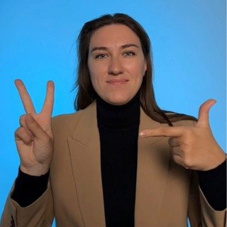
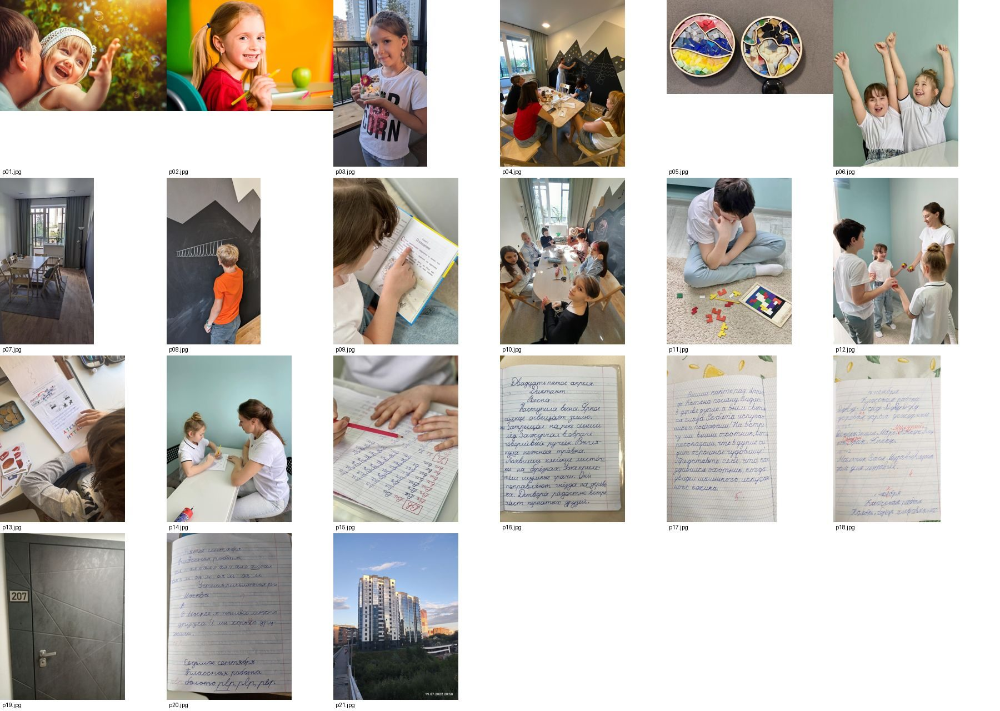

Наталья Филатова, нейропсихолог, студии «Я ♥ учиться» (Новосибирск): основа макета
Ориентира она не давала, пожеланий нет. Сначала её материал: фото из канала t.me/iloveschol и 21 кадр студии из 2ГИС (мятные стены, чёрная стена-доска с горами, светлое дерево, тетради «до и после»). Ниже четыре свежих сайта ниши (дети, обучение, дислексия). Назови номер, можно скрестить. Потом набросок: главный экран, палитры, шрифты и один блок.
0. Её материал


Слева она сама (аватар канала). Справа фото 2ГИС: p01 и p02 сток, остальное её студии и занятия. Логотипа не нашёл ни в 2ГИС, ни в канале: в шапке будет название текстом.
Kita Sunnastrahl, детский сад, Швейцария (Awwwards)
Фото детей коллажем под светлой вуалью, крупный заголовок, а вторая строка рукописным шрифтом. Для Натальи это её же дело: рукописная строка = каллиграфия, фото с занятий из 2ГИС и канала, тетради «до и после». Мой совет
Dyslexia South, центр диагностики дислексии, Великобритания
Спокойная пастель, один человек на главном в скруглённой рамке, меню делится на «Детям / Студентам / Взрослым», диагностика отдельной кнопкой. У Натальи то же деление: детям, взрослым, педагогам, плюс нейродиагностика
Персона детство, детская клиника, Нижний Новгород (Awwwards)
Цветные полосы по возрастам на главном. Для Натальи полосы «Детям / Взрослым / Педагогам» с её фото и кадрами занятий вместо 3D-персонажей (их не берём)
Смелый цвет и крупные карточки программ. Рисованных персонажей не берём, только цвет и карточки направлений (нейрофитнес, каллиграфия, настольные игры, мячики для мозга)